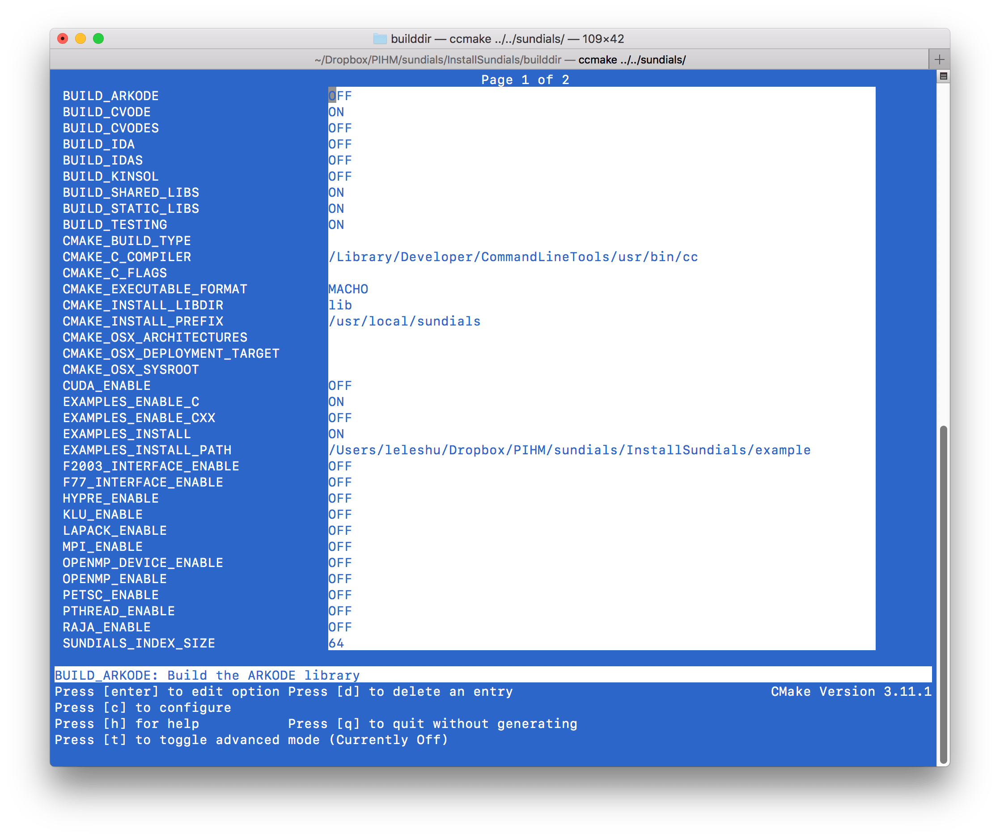
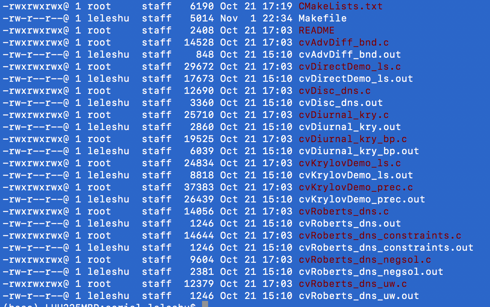
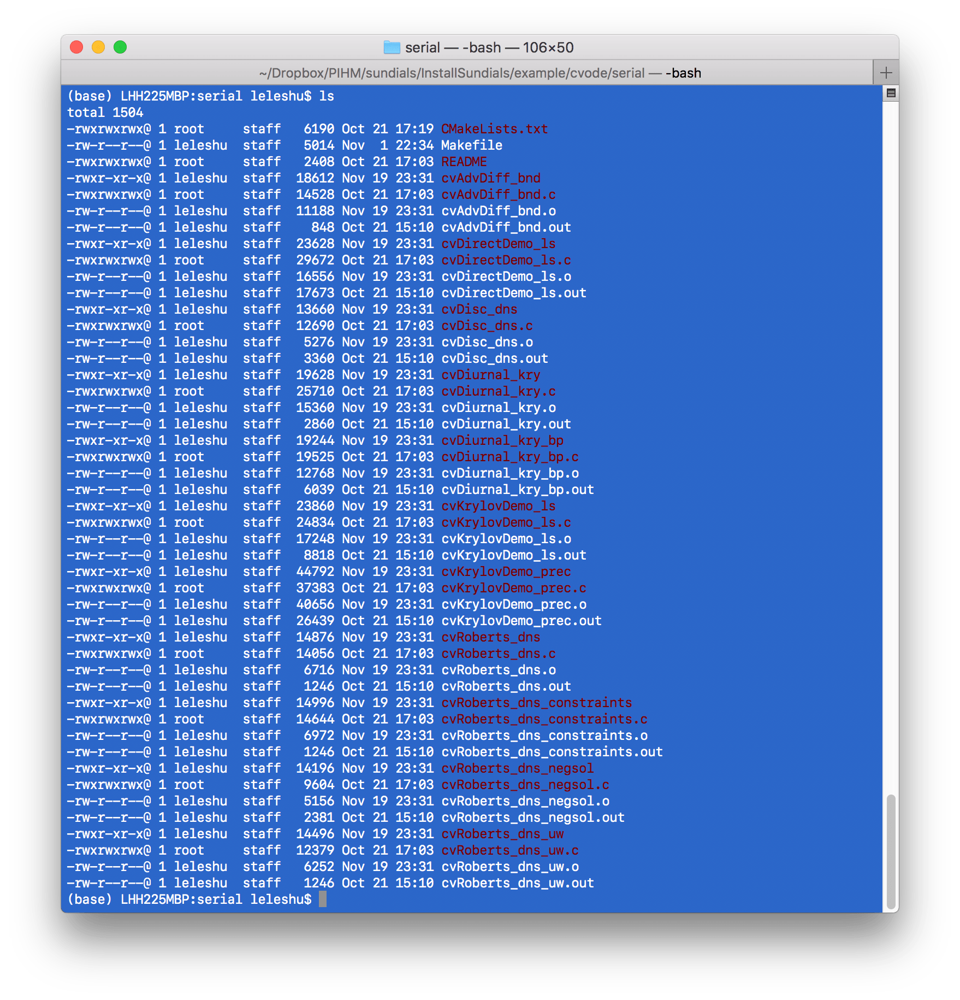
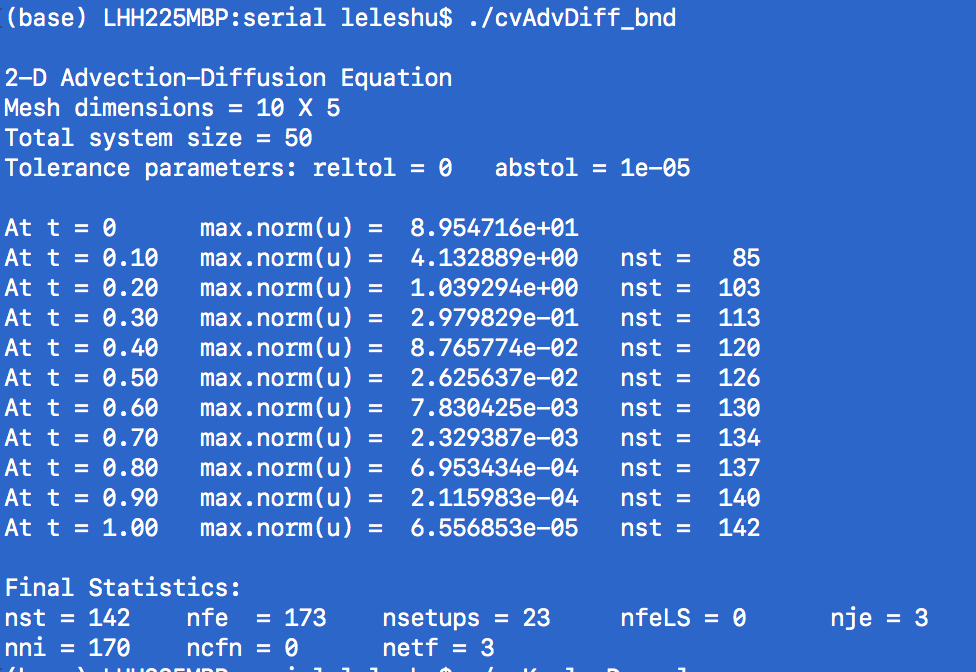

如何在Linux/mac上安装SUNDIALS/CVODE
How to Install Sundials 5.x or Cvode on Mac Linux System
 SUNDIALS
SUNDIALS
SUNDIALS: SUite of Nonlinear and DIfferential/ALgebraic Equation Solvers
SUNDIALS (https://computing.llnl.gov/projects/sundials) is a very powerful mathematical library that is helpful in solving engineering and scientific problems efficiently. CVODE is one of the tools, aiming to solve Ordinary Differential Equation, in C language. In the Solver of Hydrologic Unstructured Domain (SHUD) model, the system of ODEs describing the hydrological processes is fully coupled and solved simultaneously at each time step ($ \Delta t=t_{n}-t_{n-1}$) using CVODE, a stiff solver based on Newton-Krylov iteration.
The latest version of SUNDIALS is v5.0.0, released on November 2019. Let's install it on a Mac OS or Linux system.
I test the installation on Mac 10.13 and Ubuntu 18.04.3 LTS (GNU/Linux 4.15.0-66-generic x86_64)
- Download SUNDIALS, via https://computing.llnl.gov/projects/sundials/sundials-software. Or get latest SUNDIALS on GitHub:
git clone https://github.com/LLNL/sundials.git
Now, you must have the source code of SUNDIALS in your folder. Please enter the folder. Let's assume you are in the same level of sundials.
- Create a install folder.
The installation folder names installSundials
mkdir installSundials
cd installSundials
rm -rf builddir instdir srcdir
mkdir builddir
mkdir instdir
mkdir srcdir
cd builddir/
- Configure the installation with CCMAKE.
There are two ways to configure the installation. One is GUI, and the other is command line.
- Option 1, type command blow:
ccmake ../../sundials/
You will see a screen like this: 
Use your cursor, move to line CMAKE_INSTALL_PREFIX, which is the path SUNDIALS will be installed. Press Enter to start edit the line. I install it on /usr/local/sundials
Another path you may change is the path of example code, EXAMPLES_INSTALL_PATH.
Next, you need to select which solver you want to install, such as, ARKODE, CVODE, CVODES IDA, IDAS, KINSOL. They are on the top of your GUI; press Enter to enable or disable it. Since I need the CVODE only, I turn the BUILD_CVODE option ON and keep the rest of them OFF.
If you have OpenMP on your machine and you need the support of OpenMP parallel in your program, you can turn the OPENMP_ENABLE ON.
After edits, press C to configure, and press C again, when g option shows up on the bottom, press g to generate configuration files.
- Option 2, you can use command to realise the edits above, for example:
cmake -DCMAKE_INSTALL_PREFIX=/usr/local/sundials \
-DEXAMPLES_INSTALL_PATH=../example \
-DBUILD_CVODE=ON \
-DBUILD_CVODES=OFF \
-DBUILD_ARKODE=OFF \
-DBUILD_CVODES=OFF \
-DBUILD_IDA=OFF \
-DBUILD_IDAS=OFF \
-DBUILD_KINSOL=OFF \
-DOPENMP_ENABLE=ON \
../../sundials/
The command above configure installation, to install SUNDIALS to /usr/local/sundials, the examples to ../example, install CVODE only, with OpenMP support.
If you don't need OpenMP or your OpenMP may result in errors, use the command below:
cmake -DCMAKE_INSTALL_PREFIX=/usr/local/sundials \
-DEXAMPLES_INSTALL_PATH=../example \
-DBUILD_CVODE=ON \
-DBUILD_CVODES=OFF \
-DBUILD_ARKODE=OFF \
-DBUILD_CVODES=OFF \
-DBUILD_IDA=OFF \
-DBUILD_IDAS=OFF \
-DBUILD_KINSOL=OFF \
-DOPENMP_ENABLE=OFF \
../../sundials/
- make and install
This is simple and easy, run:
make
make install
Sometimes, if the system may require higher previlage. If so, please try to use sudo:
make
sudo make install
If there is no error occur, the SUNDIALS is installed successfully. Congrats.
- Test the SUNDIALS library with the examples.
Enter the example folder, ../example as the Option 2 in step 3. You will see several examples. 
Use make to compile all of them:
cd ../example/cvode/serial/
ls
make
After make, you will see files like this:

-
Test the program:
./cvAdvDiff_bnd ./cvKrylovDemo_ls

Now, you can use SUNDIALS/CVODE in your own numeric solver.
Be patient, you will meet more challenges.
{kind=link}